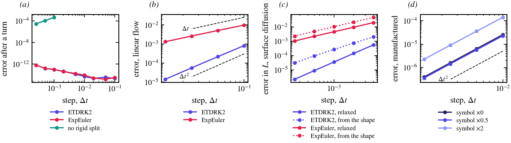
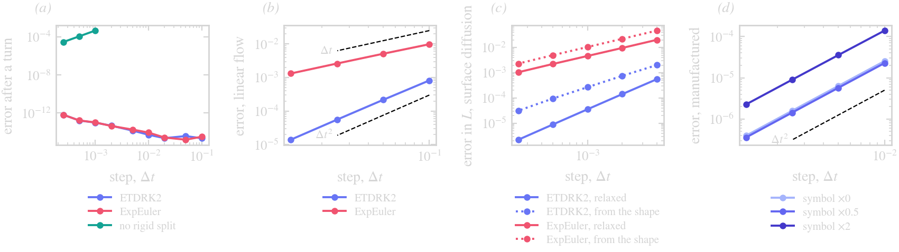

Method overview
A step of ThetaL has three parts, each on its own page:
- Kinematics and the rigid split: how a normal velocity moves a curve held at equal arclength, and how its rigid part is taken out and integrated exactly.
- Schemes: the one-step exponential Runge–Kutta methods that advance all curves together, with the stiff part exactly and the rest explicitly.
- Symbols, filter and resolution: the stiff rate per mode that the caller gives, the spectral filter, and when N changes.
Limits lists where the method needs care: close approach, rough velocities, the explicit tangential transport, and the initial layer of a stiff problem.
Validation


(a) A smooth curve turning once about a point outside it: with the rigid split the shape after a turn is exact to roundoff at any step, for both schemes; without it (rigid = :none) the rotation is an explicit transport, stable only below Δt ≈ 10⁻³ and second order there. (b) A linear flow $u = Ax$, against the exact image of the curve: ETDRK2 is second order, ExpEuler first. (c) Surface diffusion ($U = \kappa_{ss}$, symbol $\sigma = -q^4$), the error in the length at $t = 0.05$: from a relaxed state both schemes keep their orders; from the shape itself the first steps carry an initial layer (Limits). (d) A manufactured deforming ellipse (axes and orientation changing in time; $U = -F_t/|\nabla F|$ of its level set): second order whatever symbol is given, including deliberately wrong ones. The data come from docs/figures/make_data.jl; the tests (test/test_stepping.jl, test/test_integrator.jl) check the same orders.